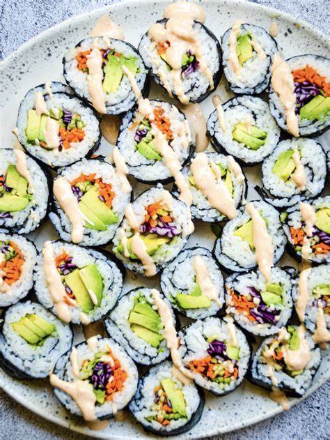
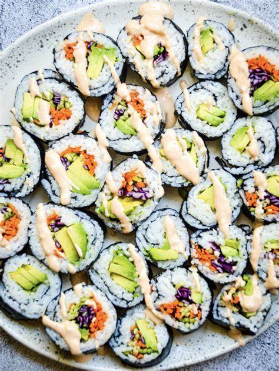

Sushi Roll
Información
El Restaurante Sushi Roll es el lugar ideal para disfrutar de la mejor comida japonesa en un ambiente acogedor y moderno. Ofrecemos una amplia variedad de platos de sushi elaborados con ingredientes frescos y de alta calidad.
Nuestro equipo de chefs altamente capacitados preparan cada plato con dedicación y pasión, para garantizar la satisfacción de nuestros clientes.
Productos
| Nombre | Descripción | Precio |
|---|---|---|
| Sushi de salmón | Salmón fresco cortado en finas láminas y enrollado con arroz y alga nori. | $12.99 |
| Sushi de atún | Atún rojo de la mejor calidad, servido en finas láminas sobre una cama de arroz. | $14.99 |
| Roll de langostino tempura | Langostinos fritos y crujientes, envueltos en arroz y alga nori. | $9.99 |
| Sashimi mixto | Variedad de pescados y mariscos crudos, cortados en finas láminas y servidos sin arroz. | $20.99 |
Promociones
- 2x1 en rollos vegetarianos los miércoles
- Descuento del 10% en pedidos superiores a $30 los jueves
- Happy hour de 3pm a 6pm de lunes a viernes: 2x1 en bebidas y aperitivos
Galería de imágenes
 


Ubicación
Nos encontramos ubicados en la siguiente dirección:
Plaza Citadella, Av. Salvador Nava Martínez 3125-Local 9, Colinas del Parque, 78294 San Luis, S.L.P.Medios de contacto
Puedes ponerte en contacto con nosotros a través de los siguientes medios: